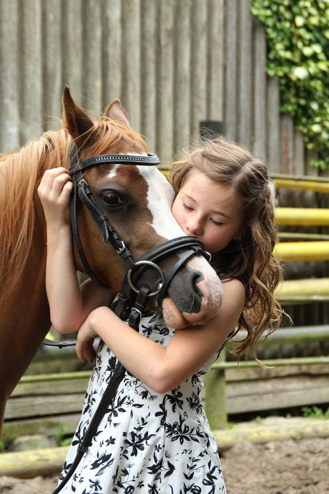

We strive to offer the best in both traditional and alternative medicine. Our goal is to provide complete care for your pets long, healthy and balanced life. Our philosophy is to integrate various forms of medicine in order to provide complete health care for your animal.
At Cougar Mountain Veterinary Hospital and Wellness Center, we utilize the full array of western diagnostics and treatments-such as radiographs, blood-work, surgery, dentistry and a complete allopathic pharmacy. However, we have found that there are various forms of treatments that can both augment and sometimes supersede more traditional therapies. These ‘alternatives’ therapies have fewer side effects and keep the body in a more balanced, homeostatic state. The additional therapies used at our clinic include acupuncture, herbal and nutraceutical remedies, chiropractic adjustments, magnetic and infrared light therapy and nutritional supplementation. Whether we choose anesthesia or acupuncture, the focus is to provide the safest, fastest, and most cost-effective way to help your pet feel better.
Our staff treats pets like family. We look forward to building a relationship with you as your lifelong pet care provider. If your pet needs medical attention, our staff will take the time to explain treatment options. We’ll help guide your decision process by answering any questions or concerns. Contact Cougar Mountain Veterinary Hospital & Wellness Center today for more information about our practice. In addition to complete information about our services, we’ve included lots of animal health information on our site. You’ll also find links to a wide range of pet-related Web sites. Thanks again and we hope to see you soon.
Hours:
Monday - Friday: 9:00am to 6:00pm
Saturday: 8:00am to 12:00pm
Sunday: Off
Call Us! Our Number: (425) 369-9291
Find Us! Our Address: 880 Front St. S Issaquah, WA 98027


Meet Us!
Dr. Howard Friedman is the owner of Cougar Mountain Veterinary Hospital & Wellness Center, and has been practicing veterinary medicine since graduating from Michigan State University in 1990. He is a Certified Veterinarian Acupuncturist and a Certified Equine Chiropractic Adjuster...Continued on the About Us Page!
Check out some photos of his work!